Elon Musk is a visionary entrepreneur known for his groundbreaking innovations and companies.
Here are some of his key inventions and innovations:
SpaceX
SpaceX, founded by Elon Musk, is a revolutionary aerospace company known for its groundbreaking achievements in space exploration and technology. Here's a list of their key inventions and milestones:-
Rockets and Launch Vehicles:
- Falcon 1: The first privately funded liquid-fueled rocket to reach orbit Falcon Rockets: SpaceX developed the Falcon 1, Falcon 9, and Falcon Heavy rockets, which have progressively increased payload capacity and reusability. The Falcon 9 and Falcon Heavy are notable for their reusable boosters, which land back on Earth after delivering payloads.
- Spacecraft: The Dragon capsule was the first privately developed spacecraft to reach the International Space Station (ISS). Crew Dragon, an upgraded version, carries astronauts to and from the ISS as part of NASA’s Commercial Crew Program.
- Starship Development: Starship is SpaceX’s next-generation rocket designed to carry both crew and cargo on long-duration interplanetary flights, including Mars missions. It's fully reusable and the largest rocket ever built, aiming to reduce costs dramatically.
- Starlink: SpaceX's satellite internet constellation, Starlink, aims to provide high-speed internet access globally, especially in remote or underserved regions.
- Mars Mission Goal: Elon Musk's long-term vision for SpaceX includes building a human colony on Mars to ensure humanity's survival in case of Earth-based disasters.
Official Website You can learn more about SpaceX on their official website:Click here
Tesla
While Elon Musk is the visionary leader behind Tesla, he's not the sole inventor of every Tesla model. However, he has played a pivotal role in their development and launch. Here are the Tesla models that have been introduced under Musk's leadership:- Tesla Roadster: A high-performance electric sports car.
- Tesla Model S: A luxury electric sedan.
- Tesla Model X: A luxury electric SUV.
- Tesla Model 3: A mid-size electric sedan.
- Tesla Model Y: A compact electric SUV.
- Tesla Cybertruck: An electric pickup truck.
- Tesla Semi: An electric semi-truck.
 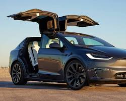
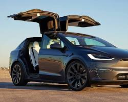
 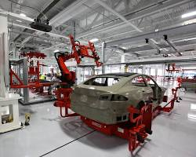
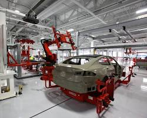
Official Website You can learn more about Tesla on their official website:Click here
Neuralink
Neuralink is a neurotechnology company founded by Elon Musk and a team of scientists and engineers. Their primary goal is to develop implantable brain-machine interfaces (BMIs) that could revolutionize the way humans interact with technology and potentially treat neurological disorders.
Key aspects of Neuralink's technology:
- Brain-Machine Interface: Neuralink is developing a device that can be surgically implanted into the brain. This device contains tiny electrodes that can record and stimulate neural activity.
- Wireless Technology: The device is designed to be wireless, allowing users to interact with computers and other devices without physical cables.
- Medical Applications: Treating conditions like paralysis, blindness, and neurological disorders.
- Augmentation: Enhancing human capabilities, such as improving memory, cognition, and sensory perception.
- It's important to note that while Neuralink has made significant progress, the technology is still in its early stages. Human trials have begun, and the full potential of this technology is yet to be realized.
Official Website You can learn more about Neuralink on their official website: Click here
The Boring Company
The Boring Company, founded by Elon Musk, aims to revolutionize transportation by building underground tunnels. Here are some images related to their projects:
- The Loop: Las Vegas Loop: A functional underground transportation system in Las Vegas that connects the Las Vegas Convention Center with various hotels and venues. Concept of Loop: A network of tunnels with electric vehicles transporting passengers at high speeds.
- Tunnel Boring Machine: Godot: A custom-built tunnel boring machine designed for efficient excavation.
- The Boring Company's Headquarters: A unique building with a futuristic design.

Official Website You can learn more about The Boring Company on their official website: Click here
PayPal
- Co-founder and CEO: Elon Musk, along with Peter Thiel and others, co-founded X.com in 1999, an online financial services company.
- Merger and PayPal Birth: X.com merged with Confinity (which operated PayPal) in 2000, leading to the creation of PayPal. Musk served as CEO for a brief period.
- eBay Acquisition: PayPal was acquired by eBay in 2002, marking a significant milestone in online payments.
Twitter
Musk purchased the social media service Twitter in 2022 and renamed it X in 2023. Elon Musk (born June 28, 1971, Pretoria, South Africa) is a South African-born
American entrepreneur who cofounded the electronic-payment firm PayPal and formed SpaceX, maker of launch vehicles and spacecraft.
- Acquisition and Rebranding: Elon Musk acquired Twitter in 2022 for $44 billion.
- X Rebrand: In July 2023, Musk rebranded Twitter as "X," aligning it with his vision of a comprehensive "everything app."
- eControversies and Changes: Musk's ownership has been marked by controversies, including mass layoffs, policy changes, and reinstatement of previously banned accounts.
 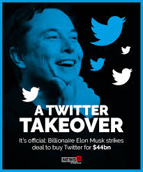
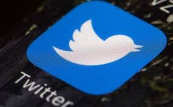
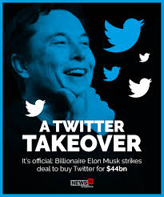
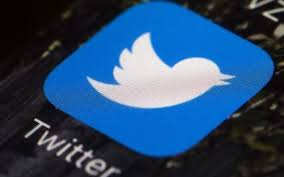
 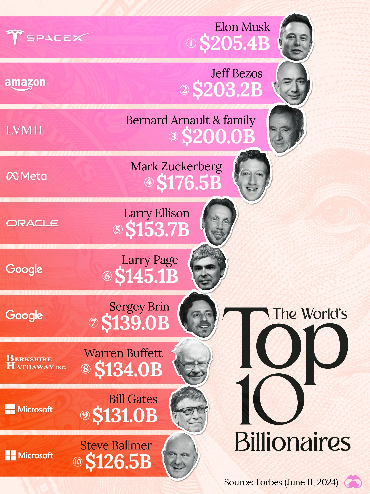
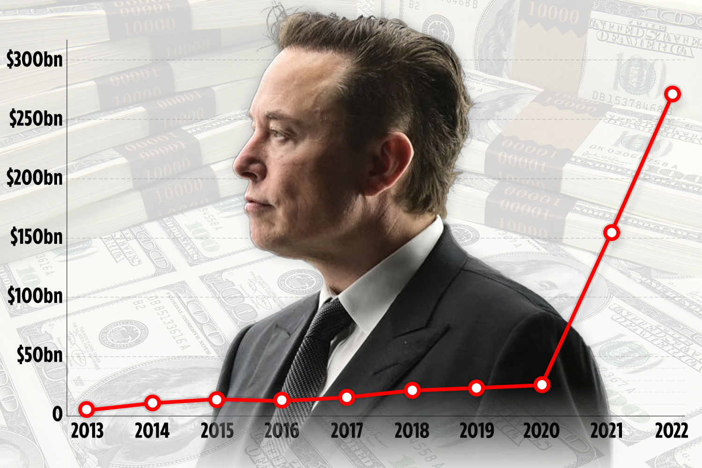
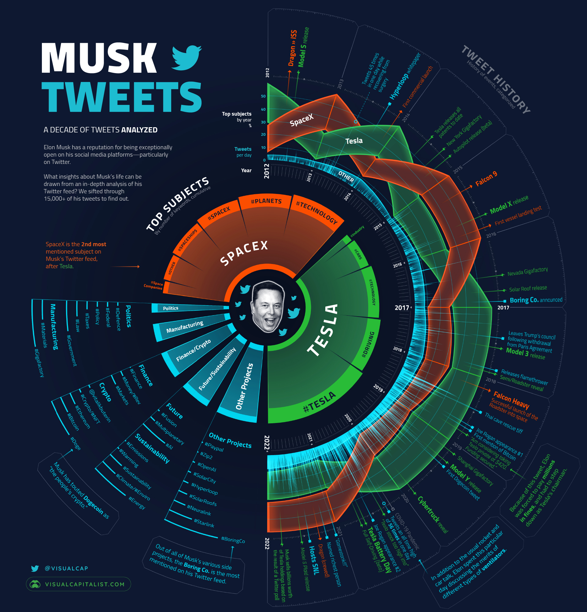
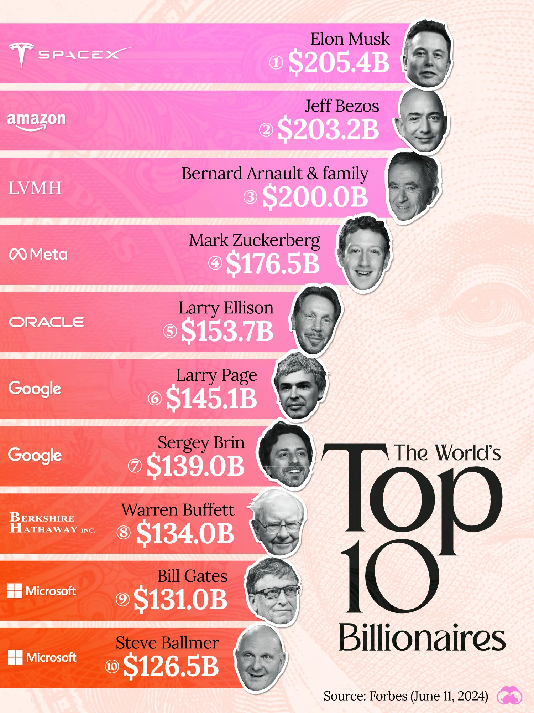
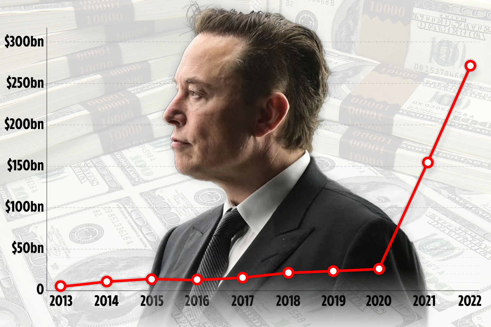
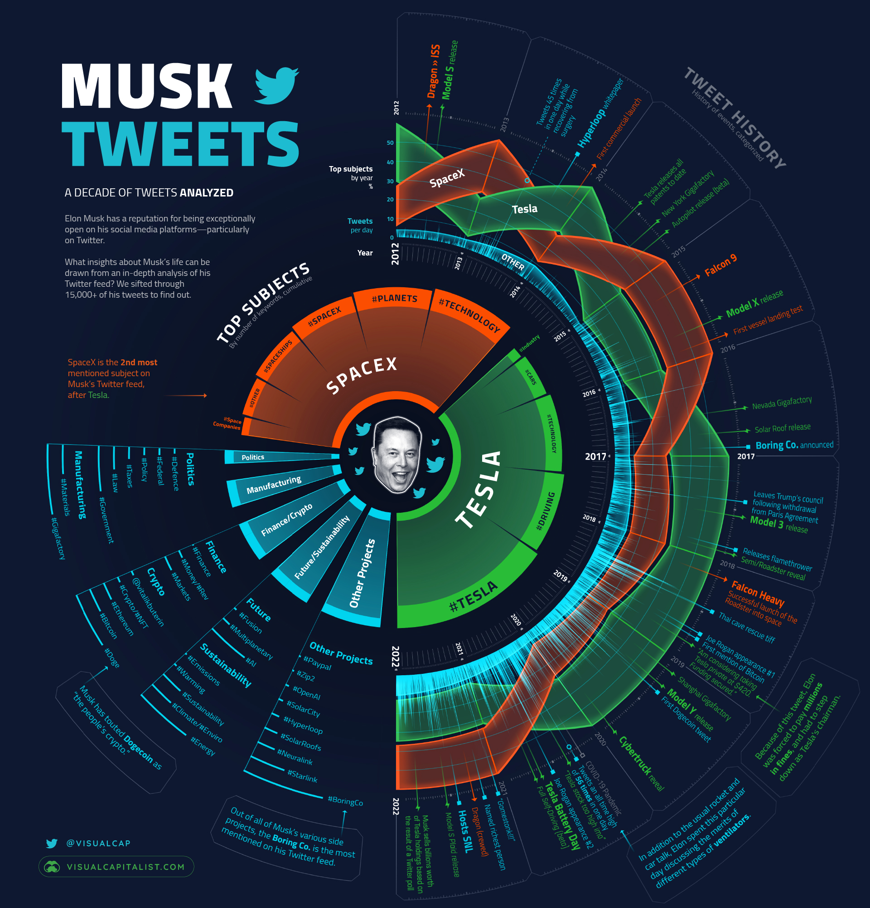